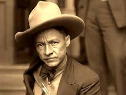

Universidad Nacional De Ingeniería
Universidad Nacional De Ingeniería
Vida, lucha y principios del General de Hombres Libres (1895 – 1934)

Nombre de nacimiento: Augusto Nicolás Calderón Sandino
Apodo: General de Hombres Libres
Fecha de nacimiento: 18 de mayo de 1895
Lugar de nacimiento: Niquinohomo, Nicaragua
Fecha de fallecimiento: 21 de febrero de 1934 (38 años)
Lugar de fallecimiento: Managua, Nicaragua
Causa de muerte: Fusilamiento
Sepultura: Lago de Managua (simbólico tras desaparición de restos)
Nacionalidad: Nicaragüense
Religión: Católico
Augusto C. Sandino nació en Niquinohomo en un entorno humilde, trabajando desde niño como campesino, lo que le dio una visión profunda de las injusticias sociales en Nicaragua. Debido a un conflicto personal, tuvo que salir del país y viajar por Honduras, Guatemala y México. Fue en el México posrevolucionario donde Sandino se empapó de ideas sindicalistas, indigenistas y, sobre todo, de un fuerte sentimiento antiimperialista, preparándolo mentalmente para regresar a su patria con una misión clara de justicia y soberanía.
A su regreso, Sandino se unió a la causa liberal, pero cuando los líderes de su bando aceptaron el Pacto del Espino Negro —que permitía la intervención de EE. UU.— él fue el único general que se negó a rendirse. Se retiró a las montañas de Las Segovias y fundó el Ejército Defensor de la Soberanía Nacional de Nicaragua (EDSNN). Durante años, lideró una guerra de guerrillas sumamente eficaz que, a pesar de la inferioridad numérica y tecnológica, logró desgastar y frustrar a las experimentadas tropas de los Marines estadounidenses.
Tras la salida de las tropas estadounidenses en 1933, Sandino demostró que su lucha no era por el poder, sino por la libertad del país, y aceptó negociar la paz con el gobierno de Juan Bautista Sacasa. Durante este breve periodo, se retiró a la zona de Wiwilí, en el río Coco, para poner en marcha un proyecto de cooperativas agrícolas. Su intención era que sus soldados y los campesinos de la zona trabajaran la tierra de forma colectiva, promoviendo la autosuficiencia y la dignidad económica fuera del control militar.
El ascenso de Anastasio Somoza García como jefe de la Guardia Nacional marcó el final trágico de Sandino, quien fue asesinado a traición en febrero de 1934 tras una cena presidencial. Aunque su muerte buscaba borrar su influencia, ocurrió lo contrario: su figura se transformó en un mito de resistencia. Su pensamiento y su sacrificio se convirtieron en la base de la identidad nacional nicaragüense y en un símbolo de lucha para toda América Latina, trascendiendo el tiempo como el "General de Hombres Libres".